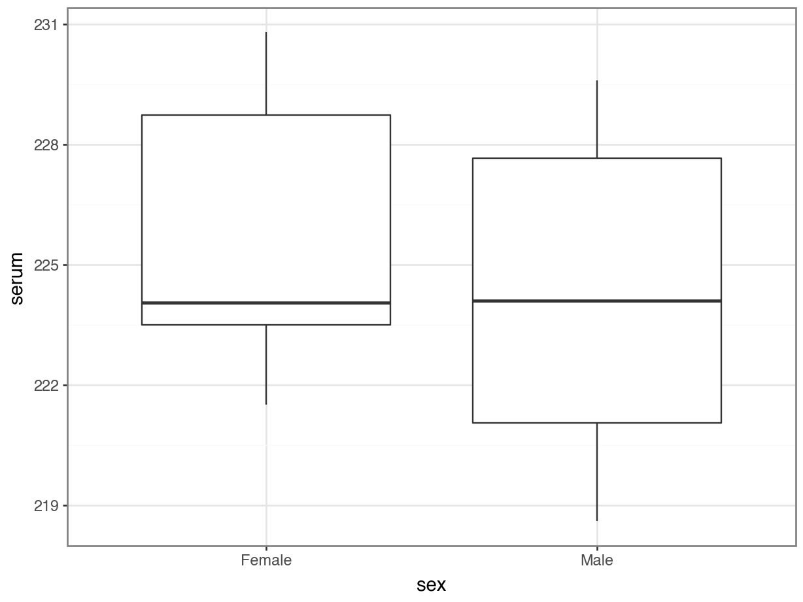

# A collection of R packages designed for data science
library(tidyverse)
# Converts stats functions to a tidyverse-friendly format
library(rstatix)5 Two-sample data
TipLearning outcomes
Questions
- When do I perform a two-sample test?
- What are the assumptions?
- How do I interpret and present the results of the test?
- How do I deal with non-normal data?
Objectives
- Set out your hypothesis for comparing two samples of continuous data
- Be able to summarise and visualise the data
- Understand and assess the underlying assumptions of the test
- Perform a two-sample t-test
- Be able to interpret and report the results
- Be able to do these steps on non-normal data
5.1 Libraries and functions
NoteClick to expand
5.1.1 Libraries
5.1.2 Functions
# Computes summary statistics
rstatix::get_summary_stats()
# Performs Levene's test for equality of variance
# (non-normally distributed data)
rstatix::levene_test()
# Performs Bartlett's test for equality of variance
# (normally distributed data)
stats::bartlett.test()
# Performs Shapiro Wilk test
stats::shapiro.test()
# Performs one- and two-sample Wilcoxon tests
# the latter is also known as 'Mann-Whitney U' test
rstatix::wilcox_test()
# Plots a Q-Q plot for comparison with a normal distribution
ggplot2::stat_qq()
# Adds a comparison line to the Q-Q plot
ggplot2::stat_qq_line()5.1.3 Libraries
# A Python data analysis and manipulation tool
import pandas as pd
# Simple yet exhaustive stats functions.
import pingouin as pg
# Python equivalent of `ggplot2`
from plotnine import *5.1.4 Functions
# Summary statistics
pandas.DataFrame.describe()
# Plots the first few rows of a DataFrame
pandas.DataFrame.head()
# Query the columns of a DataFrame with a boolean expression
pandas.DataFrame.query()
# Reads in a .csv file
pandas.DataFrame.read_csv()
# Performs an analysis of variance
pingouin.anova()
# Tests for equality of variance
pingouin.homoscedasticity()
# Performs a Mann-Whitney U test
pingouin.mwu()
# Performs the Shapiro-Wilk test for normality
pingouin.normality()
# Performs a t-test
pingouin.ttest()
# Plots a Q-Q plot for comparison with a normal distribution
plotnine.stats.stat_qq()
# Adds a comparison line to the Q-Q plot
plotnine.stats.stat_qq_line()5.2 Purpose and aim
These two-sample Student’s t-test is used when we have two samples of continuous data where we are trying to find out if the samples came from the same parent distribution or not. This essentially boils down to finding out if there is a difference in the means of the two samples.
5.3 Data and hypotheses
For example, suppose we now measure the body lengths of male guppies (in mm) collected from two rivers in Trinidad; the Aripo and the Guanapo. We want to test whether the mean body length differs between samples. We form the following null and alternative hypotheses:
- \(H_0\): The mean body length does not differ between the two groups \((\mu A = \mu G)\)
- \(H_1\): The mean body length does differ between the two groups \((\mu A \neq \mu G)\)
We use a two-sample, two-tailed t-test to see if we can reject the null hypothesis.
- We use a two-sample test because we now have two samples.
- We use a two-tailed t-test because we want to know if our data suggest that the true (population) means are different from one another rather than that one mean is specifically bigger or smaller than the other.
- We’re using Student’s t-test because the sample sizes are big and because we’re assuming that the parent populations have equal variance (We can check this later).
The data are stored in the file data/CS1-twosample.csv.
Let’s read in the data and have a quick look at the first rows to see how the data is structured.
Make sure you have downloaded the data and placed it within your working directory.
First we load the relevant libraries:
# load tidyverse
library(tidyverse)
# load rstatix, a tidyverse-friendly stats package
library(rstatix)We then read in the data and create a table containing the data.
rivers <- read_csv("data/CS1-twosample.csv")
rivers# A tibble: 68 × 2
river length
<chr> <dbl>
1 Guanapo 19.1
2 Guanapo 23.3
3 Guanapo 18.2
4 Guanapo 16.4
5 Guanapo 19.7
6 Guanapo 16.6
7 Guanapo 17.5
8 Guanapo 19.9
9 Guanapo 19.1
10 Guanapo 18.8
# ℹ 58 more rowsrivers_py = pd.read_csv("data/CS1-twosample.csv")
rivers_py.head() river length
0 Guanapo 19.1
1 Guanapo 23.3
2 Guanapo 18.2
3 Guanapo 16.4
4 Guanapo 19.75.4 Summarise and visualise
Let’s first summarise the data.
summary(rivers) river length
Length:68 Min. :11.20
Class :character 1st Qu.:18.40
Mode :character Median :19.30
Mean :19.46
3rd Qu.:20.93
Max. :26.40 This gives us the standard summary statistics, but in this case we have more than one group (Aripo and Guanapo), so it might be helpful to get summary statistics per group. One way of doing this is by using the get_summary_stats() function from the rstatix library.
# get common summary stats for the length column
rivers %>%
group_by(river) %>%
get_summary_stats(type = "common")# A tibble: 2 × 11
river variable n min max median iqr mean sd se ci
<chr> <fct> <dbl> <dbl> <dbl> <dbl> <dbl> <dbl> <dbl> <dbl> <dbl>
1 Aripo length 39 17.5 26.4 20.1 2.2 20.3 1.78 0.285 0.577
2 Guanapo length 29 11.2 23.3 18.8 2.2 18.3 2.58 0.48 0.983Numbers might not always give you the best insight into your data, so we also visualise our data:
ggplot(rivers,
aes(x = river, y = length)) +
geom_boxplot()
rivers_py.describe() length
count 68.000000
mean 19.463235
std 2.370081
min 11.200000
25% 18.400000
50% 19.300000
75% 20.925000
max 26.400000This gives us the standard summary statistics, but in this case we have more than one group (Aripo and Guanapo), so it might be helpful to get summary statistics per group. Here we use the pd.groupby() function to group by river. We only want to have summary statistics for the length variable, so we specify that as well:
rivers_py.groupby("river")["length"].describe() count mean std min 25% 50% 75% max
river
Aripo 39.0 20.330769 1.780620 17.5 19.1 20.1 21.3 26.4
Guanapo 29.0 18.296552 2.584636 11.2 17.5 18.8 19.7 23.3Numbers might not always give you the best insight into your data, so we also visualise our data:
p = (ggplot(rivers_py,
aes(x = "river", y = "length")) +
geom_boxplot())
p.show()
The box plot does appear to suggest that the two samples have different means, and moreover that the guppies in Guanapo may be smaller than the guppies in Aripo. It isn’t immediately obvious that the two populations don’t have equal variances though (box plots are not quite the right tool for this), so we plough on. Who ever said statistics would be glamorous?
5.5 Assumptions
In order to use a Student’s t-test (and for the results to be strictly valid) we have to make three assumptions:
- The parent distributions from which the samples are taken are both normally distributed (which would lead to the sample data being normally distributed too).
- Each data point in the samples is independent of the others.
- The parent distributions should have the same variance.
In this example the first assumption can be ignored as the sample sizes are large enough (because of maths, with Aripo containing 39 and Guanapo 29 samples). If the samples were smaller then we would use the tests from the previous section.
The second point we can do nothing about unless we know how the data were collected, so again we ignore it.
The third point regarding equality of variance can be tested using either Bartlett’s test (if the samples are normally distributed) or Levene’s test (if the samples are not normally distributed).
This is where it gets a bit trickier. Although we don’t care if the samples are normally distributed for the t-test to be valid (because the sample size is big enough to compensate), we do need to know if they are normally distributed in order to decide which variance test to use.
So we perform a Shapiro-Wilk test on both samples separately.
We can use the filter() function to filter the data by river, then we perform the Shapiro-Wilk test on the length measurement. The shapiro.test() function needs the data in a vector format. We get these by using the pull() function.
Tip
It’s good practice to check what kind of data is going into these functions. Run the code line-by-line to see what data is passed on from the filter() and pull() functions.
# filter data by river and perform test
rivers %>%
filter(river == "Aripo") %>%
pull(length) %>%
shapiro.test()
Shapiro-Wilk normality test
data: .
W = 0.93596, p-value = 0.02802rivers %>%
filter(river == "Guanapo") %>%
pull(length) %>%
shapiro.test()
Shapiro-Wilk normality test
data: .
W = 0.94938, p-value = 0.1764To perform a Shapiro-Wilk test we can use the normality() function from pingouin. We can give it the data in the original ‘long’ format, where we specify:
dv= dependent variable,lengthgroup= grouping variable,riverdata= data frame
pg.normality(dv = "length",
group = "river",
data = rivers_py) W pval normal
river
Guanapo 0.949384 0.176423 True
Aripo 0.935958 0.028023 FalseWe can see that whilst the Guanapo data is probably normally distributed (p = 0.1764 > 0.05), the Aripo data is unlikely to be normally distributed (p = 0.02802 < 0.05). Remember that the p-value gives the probability of observing each sample if the parent population is actually normally distributed.
The Shapiro-Wilk test is quite sensitive to sample size. This means that if you have a large sample then even small deviations from normality will cause the sample to fail the test, whereas smaller samples are allowed to pass with much larger deviations. Here the Aripo data has nearly 40 points in it compared with the Guanapo data and so it is much easier for the Aripo sample to fail compared with the Guanapo data.
Important
Complete Exercise 5.9.1.
The Q-Q plots show the opposite of what we found with the Shapiro-Wilk tests: the data for Aripo look pretty normally distributed apart from one data point, whereas the assumption of normality for the Guanapo data is less certain.
What to do? Well, you could be conservative and state that you are not confident that the data in either group are normally distributed. That would be a perfectly reasonable conclusion.
I would personally not have issues with stating that the Aripo data are probably normally distributed enough.
5.6 Equality of variance
Tip
Remember that statistical tests do not provide answers, they merely suggest patterns. Human interpretation is still a crucial aspect to what we do.
The reason why we’re checking for equality of variance (also referred to as homogeneity of variance) is because many statistical tests assume that the spread of the data within different parental populations (in this case, two) is the same.
If that is indeed the case, then the data themselves should have equal spread as well.
The Shapiro-Wilk test and the Q-Q plots have shown that some of the data might not be normal enough (although in opposite directions!) and so in order to test for equality of variance we will use Levene’s test.
The function we use is levene_test() from the rstatix library.
It takes the data in the form of a formula as follows:
levene_test(data = rivers,
formula = length ~ river)Warning in leveneTest.default(y = y, group = group, ...): group coerced to
factor.# A tibble: 1 × 4
df1 df2 statistic p
<int> <int> <dbl> <dbl>
1 1 66 1.77 0.188Or shortened:
levene_test(rivers,
length ~ river)The key bit of information is the p column. This is the p-value 0.1876 for this test.
To test for equality of variance, we can use the homoscedasticity() function from pingouin.
Note that, contrary to R, we specify the type of test in the method argument. The default is "levene", assuming that data are not normally distributed.
pg.homoscedasticity(dv = "length",
group = "river",
method = "levene",
data = rivers_py) W pval equal_var
levene 1.773184 0.187569 TrueThe p-value tells us the probability of observing these two samples if they come from distributions with the same variance. As this probability is greater than our arbitrary significance level of 0.05 then we can be somewhat confident that the necessary assumptions for carrying out Student’s t-test on these two samples was valid. (Once again woohoo!)
5.6.1 Bartlett’s test
If we had wanted to carry out Bartlett’s test (i.e. if the data had been sufficiently normally distributed) then we would have done:
Here we use bartlett.test() function.
bartlett.test(length ~ river, data = rivers)
Bartlett test of homogeneity of variances
data: length by river
Bartlett's K-squared = 4.4734, df = 1, p-value = 0.03443The relevant p-value is given on the 3rd line.
pg.homoscedasticity(dv = "length",
group = "river",
method = "bartlett",
data = rivers_py) T pval equal_var
bartlett 4.473437 0.034426 False5.7 Implement and interpret the test
In this case we’re ignoring the fact that the data are not normal enough, according to the Shapiro-Wilk test. However, this is not entirely naughty, because the sample sizes are pretty large and the t-test is also pretty robust in this case, we can perform a t-test. Remember, this is only allowed because the variances of the two groups (Aripo and Guanapo) are equal.
Perform a two-sample, two-tailed, t-test:
# two-sample, two-tailed t-test
t_test(length ~ river,
alternative = "two.sided",
var.equal = TRUE,
data = rivers)# A tibble: 1 × 8
.y. group1 group2 n1 n2 statistic df p
* <chr> <chr> <chr> <int> <int> <dbl> <dbl> <dbl>
1 length Aripo Guanapo 39 29 3.84 66 0.000275Here we do the following:
- The first argument must be in the formula format:
response ~ predictor - The
alternativeargument gives the type of alternative hypothesis and must be one oftwo.sided,greaterorless - The
var.equalargument says whether the variance of the two samples can be assumed to be equal (Student’s t-test) or unequal (Welch’s t-test)
So, how do we interpret these results?
.y.gives you the name of the response variable, or variable of interest (lengthin our case)group1andgroup2gives you the names of the groups being comparedn1andn2gives you the number of observations in each groupstatisticgives you the value of the statistic (t = 3.8432667)dfgives you the number of degrees of freedom (66)pgives you the p-value (2.75^{-4})
The ttest() function in pingouin needs two vectors as input, so we split the data as follows:
aripo = rivers_py.query('river == "Aripo"')["length"]
guanapo = rivers_py.query('river == "Guanapo"')["length"]Next, we perform the t-test. We specify that the variance are equal by setting correction = False. We also transpose() the data, so we can actually see the entire output.
pg.ttest(aripo, guanapo,
correction = False).transpose() T-test
T 3.843267
dof 66
alternative two-sided
p-val 0.000275
CI95% [0.98, 3.09]
cohen-d 0.942375
BF10 92.191
power 0.966135Again, the p-value is what we’re most interested in. Since the p-value is very small (much smaller than the standard significance level) we choose to say “that it is very unlikely that these two samples came from the same parent distribution and as such we can reject our null hypothesis” and state that:
A Student’s t-test indicated that the mean body length of male guppies in the Guanapo river (\(\bar{x}\) = 18.29 mm) differs significantly from the mean body length of male guppies in the Aripo river (\(\bar{x}\) = 20.33 mm, p = 0.0003).
Now there’s a conversation starter.
Important
Complete Exercise 5.9.2.
5.8 Dealing with non-normal data
If we’re not sure that the data we are dealing with may come from a parent distribution that is normal, then we can’t use a Student’s t-test. Instead we use the Mann-Whitney U test. This test does not assume that the parent distributions are normally distributed. It does however assume that both have the same shape and variance. With this test we check if the medians of the two parent distributions differ significantly from each other.
5.8.1 Data and hypotheses
Again, we use the rivers data set. We want to test whether the median body length of male guppies differs between samples. We form the following null and alternative hypotheses:
- \(H_0\): The difference in median body length between the two groups is 0 \((\mu A - \mu G = 0)\)
- \(H_1\): The difference in median body length between the two groups is not 0 \((\mu A - \mu G \neq 0)\)
We use a two-tailed Mann-Whitney U test to see if we can reject the null hypothesis.
5.8.2 Summarise and visualise
We did this in the previous section.
5.8.3 Assumptions
We have checked these previously.
5.8.4 Implement and interpret the test
Calculate the median for each group (for reference) and perform a two-tailed, Mann-Whitney U test:
We group the data using group_by() for each river and then use the summarise() the data.
rivers %>%
group_by(river) %>%
summarise(median_length = median(length))# A tibble: 2 × 2
river median_length
<chr> <dbl>
1 Aripo 20.1
2 Guanapo 18.8Perform the Mann-Whitney U test:
wilcox_test(length ~ river,
alternative = "two.sided",
data = rivers)# A tibble: 1 × 7
.y. group1 group2 n1 n2 statistic p
* <chr> <chr> <chr> <int> <int> <dbl> <dbl>
1 length Aripo Guanapo 39 29 841 0.000646- The first argument must be in the formula format:
response ~ predictor - The
alternativeargument gives the type of alternative hypothesis and must be one oftwo.sided,greaterorless
The output:
.y.gives you the name of the response variable, or variable of interest (lengthin our case)group1andgroup2gives you the names of the groups being comparedn1andn2gives you the number of observations in each groupstatisticgives you the value of the statistic (t = 841)pgives you the p-value (6.46^{-4})
Before we can implement the Mann-Whitney U test, we need to reformat our data a bit.
The pg.mwu() function requires the numerical input for the two groups it needs to compare.
The easiest way is to reformat our data from the long format where all the data are stacked on top of one another to the wide format, where the length values are in separate columns for the two rivers.
We can do this with the pd.pivot() function. We save the output in a new object and then access the values as required. It keeps all the data separate, meaning that there will be missing values NaN in this format. The pg.mwu() function ignores missing values by default.
# reformat the data into a 'wide' format
rivers_py_wide = pd.pivot(rivers_py,
columns = 'river',
values = 'length')
# have a look at the format
rivers_py_wide.head()river Aripo Guanapo
0 NaN 19.1
1 NaN 23.3
2 NaN 18.2
3 NaN 16.4
4 NaN 19.7Next, we can calculate the median values for each river:
rivers_py_wide['Aripo'].median()np.float64(20.1)rivers_py_wide['Guanapo'].median()np.float64(18.8)Finally, we can perform the Mann-Whitney U test:
# perform the Mann-Whitney U test
# ignoring the missing values
pg.mwu(rivers_py_wide['Aripo'],
rivers_py_wide['Guanapo']) U-val alternative p-val RBC CLES
MWU 841.0 two-sided 0.000646 0.487179 0.74359Given that the p-value is less than 0.05 we can reject the null hypothesis at this confidence level. Again, the p-value on the 3rd line is what we’re most interested in. Since the p-value is very small (much smaller than the standard significance level) we choose to say “that it is very unlikely that these two samples came from the same parent distribution and as such we can reject our null hypothesis”.
To put it more completely, we can state that:
A Mann-Whitney test indicated that the median body length of male guppies in the Guanapo river (\(\tilde{x}\) = 18.8 mm) differs significantly from the median body length of male guppies in the Aripo river (\(\tilde{x}\) = 20.1 mm, p = 0.0006).
5.9 Exercises
5.9.1 Q-Q plots rivers
5.9.2 Turtles
ExerciseExercise 2
Level:
This exercise explores serum cholesterol concentrations in turtles.
Using the data in data/CS1-turtle.csv, test the null hypothesis that male and female turtles have the same mean serum cholesterol concentrations.
- Load the data
- Write down the null and alternative hypotheses
- Import the data
- Summarise and visualise the data
- Check your assumptions (normality and variance) using appropriate tests and plots
- Perform a two-sample t-test
- Write down a sentence that summarises the results that you have found
AnswerAnswer
5.10 Answer
Data
Once you’ve loaded the data, have a look at the structure. The data is in a tidy data format, where each variable (the thing that you measure) is in its own column. Each observation has its own row.
Hypotheses
\(H_0\) : male mean \(=\) female mean
\(H_1\) : male mean \(\neq\) female mean
Load, summarise and visualise data
Let’s load the data and explore our data a bit more before we dive into the statistics.
# load the data
turtle <- read_csv("data/CS1-turtle.csv")
# and have a look
turtle# A tibble: 13 × 2
serum sex
<dbl> <chr>
1 220. Male
2 219. Male
3 230. Male
4 229. Male
5 222 Male
6 224. Male
7 226. Male
8 223. Female
9 222. Female
10 230. Female
11 224. Female
12 224. Female
13 231. FemaleLet’s summarise the data (although a visualisation is probably much easier to work with):
# create summary statistics for each group
turtle %>%
group_by(sex) %>%
get_summary_stats(type = "common")# A tibble: 2 × 11
sex variable n min max median iqr mean sd se ci
<chr> <fct> <dbl> <dbl> <dbl> <dbl> <dbl> <dbl> <dbl> <dbl> <dbl>
1 Female serum 6 222. 231. 224. 5.22 226. 3.87 1.58 4.06
2 Male serum 7 219. 230. 224. 6.6 224. 4.26 1.61 3.94and visualise the data:
# visualise the data
ggplot(turtle,
aes(x = sex, y = serum)) +
geom_boxplot()
turtle_py = pd.read_csv("data/CS1-turtle.csv")
turtle_py.describe() serum
count 13.000000
mean 224.900000
std 3.978274
min 218.600000
25% 222.000000
50% 224.100000
75% 228.800000
max 230.800000and visualise the data:
p = (ggplot(turtle_py,
aes(x = "sex", y = "serum")) +
geom_boxplot())
p.show()
As always we use the plot and summary to assess three things:
- Does it look like we’ve loaded the data in correctly?
- We have two groups and the extreme values of our plots seem to match with our data set, so I’m happy that we haven’t done anything massively wrong here.
- Do we think that there is a difference between the two groups?
- We need the result of the formal test to make sense given the data, so it’s important to develop a sense of what we think is going to happen here. Whilst the ranges of the two groups suggests that the Female serum levels might be higher than the males when we look at things more closely we realise that isn’t the case. The box plot shows that the median values of the two groups is virtually identical and this is backed up by the summary statistics we calculated: the medians are both about 224.1, and the means are fairly close too (225.7 vs 224.2). Based on this, and the fact that there are only 13 observations in total I would be very surprised if any test came back showing that there was a difference between the groups.
- What do we think about assumptions?
- Normality looks a bit worrying: whilst the
Malegroup appears nice and symmetric (and so might be normal), theFemalegroup appears to be quite skewed (since the median is much closer to the bottom than the top). We’ll have to look carefully at the more formal checks to decided whether we think the data are normal enough for us to use a t-test. - Homogeneity of variance. At this stage the spread of the data within each group looks similar, but because of the potential skew in the
Femalegroup we’ll again want to check the assumptions carefully.
- Normality looks a bit worrying: whilst the
Assumptions
Normality
Let’s look at the normality of each of the groups separately. There are several ways of getting at the serum values for Male and Female groups separately. All of them come down to splitting the data. Afterwards we use the Shapiro-Wilk (‘formal’ test), followed by Q-Q plots (much more informative).
# perform Shapiro-Wilk test on each group
turtle %>%
filter(sex == "Female") %>%
pull(serum) %>%
shapiro.test()
Shapiro-Wilk normality test
data: .
W = 0.84178, p-value = 0.1349turtle %>%
filter(sex == "Male") %>%
pull(serum) %>%
shapiro.test()
Shapiro-Wilk normality test
data: .
W = 0.94392, p-value = 0.6743pg.normality(dv = "serum",
group = "sex",
data = turtle_py) W pval normal
sex
Male 0.943924 0.674275 True
Female 0.841785 0.134869 TrueThe p-values for both Shapiro-Wilk tests are non-significant which suggests that the data are normal enough. This is a bit surprising given what we saw in the box plot but there are two bits of information that we can use to reassure us.
- The p-value for the
Femalegroup is smaller than for theMalegroup (suggesting that theFemalegroup is closer to being non-normal than theMalegroup) which makes sense based on our visual observations. - The Shapiro-Wilk test is generally quite relaxed about normality for small sample sizes (and notoriously strict for very large sample sizes). For a group with only 6 data points in it, the data would actually have to have a really, really skewed distribution. Given that the Female group only has 6 data points in it, it’s not too surprising that the Shapiro-Wilk test came back saying everything is OK.
Given these caveats of the Shapiro-Wilk test (I’ll stop mentioning them now, I think I’ve made my opinion clear ;)), let’s look at the Q-Q plots.
# create Q-Q plots for both groups
ggplot(turtle,
aes(sample = serum)) +
stat_qq() +
stat_qq_line(colour = "blue") +
facet_wrap(facets = vars(sex))
# create Q-Q plots for both groups
p = (ggplot(turtle_py,
aes(sample = "serum")) +
stat_qq() +
stat_qq_line(colour = "red") +
facet_wrap("sex"))
p.show()
The results from the Q-Q plots echo what we’ve already seen from the Shapiro-Wilk analyses. The normality of the data in the Male group doesn’t look too bad whereas the those in the Female group looks somewhat dodgy.
Overall, the assumption of normality of the data doesn’t appear to be very well met at all, but we do have to bear in mind that there are only a few data points in each group and we might just be seeing this pattern in the data due to random chance rather than because the underlying populations are actually not normally distributed. Personally, though I’d edge towards non-normal here.
Homogeneity of Variance
It’s not clear whether the data are normal or not, so it isn’t clear which test to use here. The sensible approach is to do both and hope that they agree (fingers crossed!). Or err on the side of caution and assume they are not normal, but potentially throwing away statistical power (more on that later).
Bartlett’s test gives us:
# perform Bartlett's test
bartlett.test(serum ~ sex,
data = turtle)
Bartlett test of homogeneity of variances
data: serum by sex
Bartlett's K-squared = 0.045377, df = 1, p-value = 0.8313and Levene’s test gives us:
# perform Levene's test
levene_test(serum ~ sex,
data = turtle)# A tibble: 1 × 4
df1 df2 statistic p
<int> <int> <dbl> <dbl>
1 1 11 0.243 0.631Bartlett’s test gives us:
pg.homoscedasticity(dv = "serum",
group = "sex",
method = "bartlett",
data = turtle_py) T pval equal_var
bartlett 0.045377 0.831312 Trueand Levene’s test gives us:
pg.homoscedasticity(dv = "serum",
group = "sex",
method = "levene",
data = turtle_py) W pval equal_var
levene 0.243418 0.63145 TrueThe good news is that both Levene and Bartlett agree that there is homogeneity of variance between the two groups (thank goodness, that’s one less thing to worry about!).
Overall, what this means is that we’re not too sure about normality, but that homogeneity of variance is pretty good.
Implement two-sample t-test
Because of the result of the Bartlett test I know that I can carry out a two-sample Student’s t-test. If the variances between the two groups were not equal, then we’d have to perform Welch’s t-test.
Note
In the t_test() function the default option for dealing with equality of variance is to assume there there isn’t any. If you look at the help page with ?t_test() then you’ll see that the default for var.equal = FALSE. Here we do assume equality of variance, so we set it to var.equal = TRUE.
# perform two-sample t-test
t_test(serum ~ sex,
alternative = "two.sided",
var.equal = TRUE,
data = turtle)# A tibble: 1 × 8
.y. group1 group2 n1 n2 statistic df p
* <chr> <chr> <chr> <int> <int> <dbl> <dbl> <dbl>
1 serum Female Male 6 7 0.627 11 0.544To test if the two groups are different from one another, we can use the pg.ttest() function.
This function requires the data to be separated into individual groups, so we need to split the serum data by sex. One of the ways we can do this is:
turtle_male = turtle_py.query('sex == "Male"')["serum"]
turtle_female = turtle_py.query('sex == "Female"')["serum"]Next, we use these data to test for differences:
pg.ttest(turtle_female, turtle_male,
alternative = "two-sided",
correction = False).transpose() T-test
T 0.626811
dof 11
alternative two-sided
p-val 0.543573
CI95% [-3.58, 6.42]
cohen-d 0.348725
BF10 0.519
power 0.088495With a p-value of 0.544, this test tells us that there is insufficient evidence to suggest that the means of the two groups are different. A suitable summary sentence would be:
A Student’s two-sample t-test indicated that the mean serum cholesterol level did not differ significantly between male and female turtles (p = 0.544).
Discussion
In reality, because of the ambiguous normality assumption assessment, for this data set I would actually carry out two different tests; the two-sample t-test with equal variance and the Mann-Whitney U test. If both of them agreed then it wouldn’t matter too much which one I reported (I’d personally report both with a short sentence to say that I’m doing that because it wasn’t clear whether the assumption of normality had or had not been met), but it would be acceptable to report just one.
5.10.1 Turtles (revisited)
5.11 Summary
TipKey points
- Student’s t tests are used when you have two samples of continuous data, which are normally distributed, independent of each other and have equal variance
- A good way of assessing the assumption of normality is by checking the data against a Q-Q plot
- We can check equality of variance (homoscedasticity) with Bartlett’s (normal data) or Levene’s (non-normal data) test
- The Mann-Whitney U test is used when you have two samples of continuous data, which are not normally distributed, but are independent of each other, have equal variance and similar distributional shape